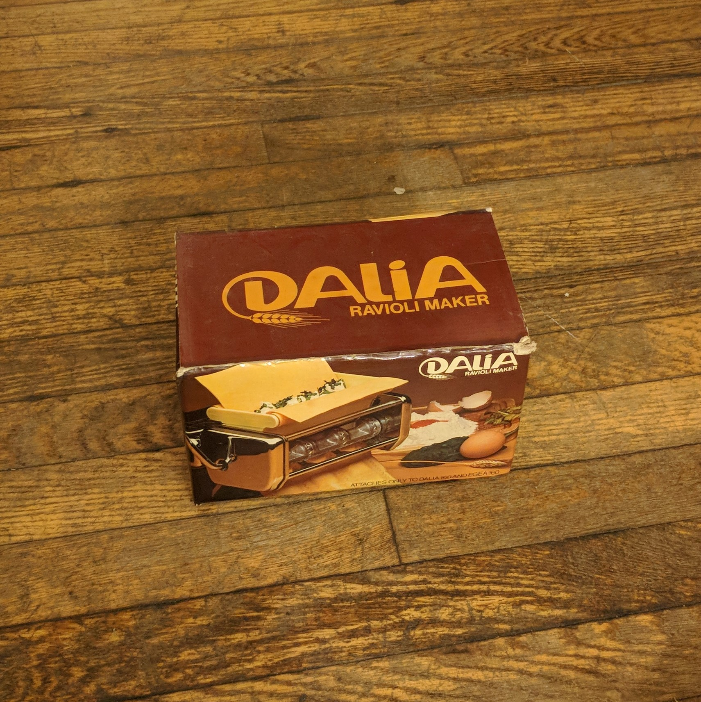

1960s Ravioli Maker
- Date of aquisition: ??/??/????
- Last known location: kitchen, cabinet
- Material: metal, paper
- Color: brown
I can only assume this predates the current lineage of tennants. I'm not sure. I like it though. We have yet to put it to use.